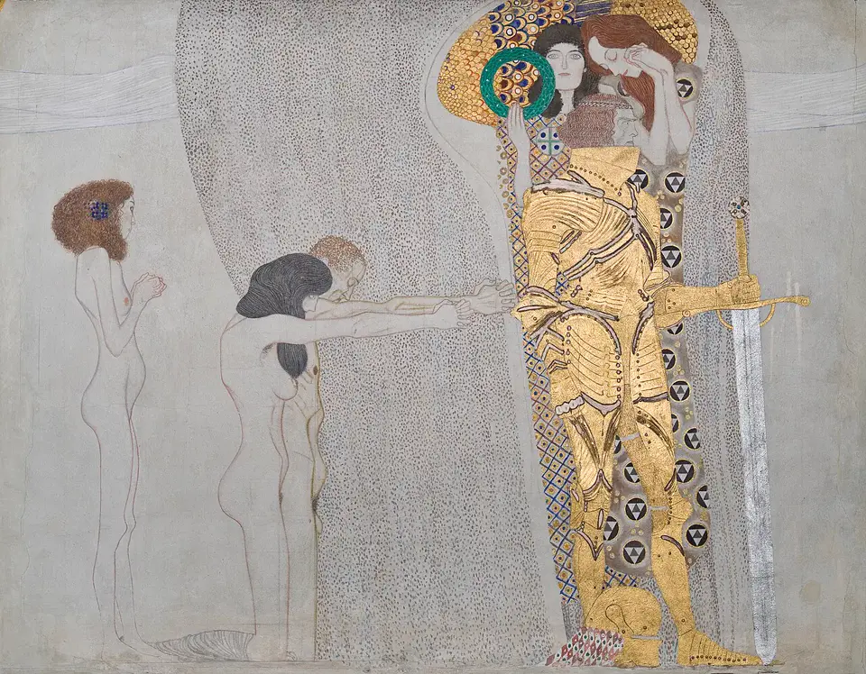
The Web of Influence
Compare the passages. Read the evidence.
264 sourced connections
60 composers · 115 other voices
A timeline of lives.
Begin with Mahler’s inheritance, or follow the dates.
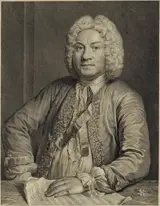
CouperinFrançois Couperin1668–17335 sourced connections →Corelli climbs Couperin’s Parnassus1672Nicolas de GrignyNicolas de Grigny1672–17031 sourced connection →Bach writes out a French organ book1673Alessandro MarcelloAlessandro Marcello1673–17471 sourced connection →An oboe concerto becomes keyboard ornament study1678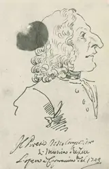
VivaldiAntonio Vivaldi1678–17413 sourced connections →An inherited dance closes Vivaldi’s first opus1683RameauJean-Philippe Rameau1683–17641 sourced connection →Voltaire supplies Rameau’s comédie-ballet1685ScarlattiDomenico Scarlatti1685–17572 sourced connections →A Roman keyboard contest survives as anecdote1685HandelGeorge Frideric Handel1685–17599 sourced connections →Zachow joins counterpoint to foreign repertory1685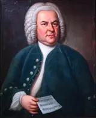
J. S. BachJohann Sebastian Bach1685–175032 sourced connections →Bach outstays his leave in Lübeck1686Nicola Antonio PorporaNicola Antonio Porpora1686–17681 sourced connection →Accompanying singing lessons teaches Haydn declamation1687Francesco GeminianiFrancesco Geminiani1687–17621 sourced connection →Corelli’s Folia becomes a concerto grosso1694VoltaireVoltaire1694–17781 sourced connection →Voltaire supplies Rameau’s comédie-ballet1700Ewe drumming of GhanaEwe drumming of GhanaOral tradition1 sourced connection →Reich studies Ewe drumming in Ghana1700Spanish guitar and dance traditionsSpanish guitar and dance traditionsEarly modern traditions1 sourced connection →Spanish strumming enters a keyboard sonata1710Giovanni Battista PergolesiGiovanni Battista Pergolesi1710–17362 sourced connections →A Stabat mater becomes a German psalm1714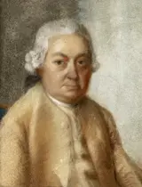
C. P. E. BachCarl Philipp Emanuel Bach1714–17885 sourced connections →Emanuel identifies his only music teacher1724Friedrich Gottlieb KlopstockFriedrich Gottlieb Klopstock1724–18031 sourced connection →A memorial service unlocks the finale1732HaydnJoseph Haydn1732–18098 sourced connections →Haydn learns at the keyboard from Emanuel1733Gottfried van SwietenGottfried van Swieten1733–18031 sourced connection →Sunday sessions bring Bach and Handel home1735Johann Christian BachJohann Christian Bach1735–17821 sourced connection →Bach’s keyboard sonatas become Mozart concertos1736Johann Georg AlbrechtsbergerJohann Georg Albrechtsberger1736–18091 sourced connection →Fugue and canon follow Haydn’s departure1749Johann Wolfgang von GoetheJohann Wolfgang von Goethe1749–18325 sourced connections →Goethe’s tragedy receives Beethoven’s stage music1750Antonio SalieriAntonio Salieri1750–18252 sourced connections →Salieri teaches Beethoven Italian vocal style1751The B–A–C–H signatureThe B–A–C–H signatureFour-note musical cryptogram1 sourced connection →Bach signs the unfinished fugue in notes1756 MozartWolfgang Amadeus Mozart1756–179111 sourced connections →Emanuel’s miniature supplies a concerto finale1758Carl Friedrich ZelterCarl Friedrich Zelter1758–18321 sourced connection →Zelter teaches Fanny Mendelssohn counterpoint and Bach1759Friedrich SchillerFriedrich Schiller1759–18051 sourced connection →Schiller’s ode enters a symphonic finale1760Katsushika HokusaiKatsushika Hokusai1760–18491 sourced connection →Hokusai’s wave on the cover of La mer1763Jean PaulJean Paul1763–18252 sourced connections →Schumann’s Papillons retell the masked ball in Flegeljahre1770
MozartWolfgang Amadeus Mozart1756–179111 sourced connections →Emanuel’s miniature supplies a concerto finale1758Carl Friedrich ZelterCarl Friedrich Zelter1758–18321 sourced connection →Zelter teaches Fanny Mendelssohn counterpoint and Bach1759Friedrich SchillerFriedrich Schiller1759–18051 sourced connection →Schiller’s ode enters a symphonic finale1760Katsushika HokusaiKatsushika Hokusai1760–18491 sourced connection →Hokusai’s wave on the cover of La mer1763Jean PaulJean Paul1763–18252 sourced connections →Schumann’s Papillons retell the masked ball in Flegeljahre1770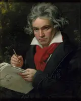
BeethovenLudwig van Beethoven1770–182723 sourced connections →The Well-Tempered Clavier enters Beethoven’s early training1776E. T. A. HoffmannE. T. A. Hoffmann1776–18222 sourced connections →Hoffmann’s mad Kapellmeister becomes Schumann’s Kreisleriana1782Niccolò PaganiniNiccolò Paganini1782–18403 sourced connections →Liszt hears Paganini at the Opéra, April 18321788Arthur SchopenhauerArthur Schopenhauer1788–18601 sourced connection →Wagner finds Schopenhauer and plans Tristan, 18541788Friedrich RückertFriedrich Rückert1788–18661 sourced connection →Rückert’s private grief becomes five songs1788Lord ByronLord Byron1788–18241 sourced connection →Paganini’s viola request becomes Byron’s Harold in Italy1794Wilhelm HenselWilhelm Hensel1794–18611 sourced connection →Wilhelm Hensel draws each month of Fanny’s Das Jahr1797 SchubertFranz Schubert1797–18286 sourced connections →Schubert’s early compositions lead to Salieri lessons1798Adam MickiewiczAdam Mickiewicz1798–18551 sourced connection →Did Mickiewicz’s poems inspire Chopin’s Ballades?1799Alexander PushkinAlexander Pushkin1799–18373 sourced connections →Mussorgsky turns Pushkin’s Boris Godunov into an opera1800Chinese folk melody (Mòlìhuā)Chinese folk melody (Mòlìhuā)Oral tradition1 sourced connection →A Chinese music box gives Turandot its tunes1800Hungarian peasant songHungarian peasant songOral tradition1 sourced connection →Bartók records peasant songs on the phonograph1800Lithuanian folk songLithuanian folk songOral tradition1 sourced connection →The Rite’s opening bassoon sings a Lithuanian tune1801John Henry NewmanJohn Henry Newman1801–18901 sourced connection →Elgar sets Newman’s poem of a dying soul1801Vincenzo BelliniVincenzo Bellini1801–18351 sourced connection →Chopin sings Bellini’s line at the piano1803
SchubertFranz Schubert1797–18286 sourced connections →Schubert’s early compositions lead to Salieri lessons1798Adam MickiewiczAdam Mickiewicz1798–18551 sourced connection →Did Mickiewicz’s poems inspire Chopin’s Ballades?1799Alexander PushkinAlexander Pushkin1799–18373 sourced connections →Mussorgsky turns Pushkin’s Boris Godunov into an opera1800Chinese folk melody (Mòlìhuā)Chinese folk melody (Mòlìhuā)Oral tradition1 sourced connection →A Chinese music box gives Turandot its tunes1800Hungarian peasant songHungarian peasant songOral tradition1 sourced connection →Bartók records peasant songs on the phonograph1800Lithuanian folk songLithuanian folk songOral tradition1 sourced connection →The Rite’s opening bassoon sings a Lithuanian tune1801John Henry NewmanJohn Henry Newman1801–18901 sourced connection →Elgar sets Newman’s poem of a dying soul1801Vincenzo BelliniVincenzo Bellini1801–18351 sourced connection →Chopin sings Bellini’s line at the piano1803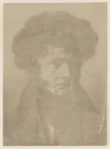
BerliozHector Berlioz1803–186911 sourced connections →Berlioz sees Hamlet at the Odéon, 18271805Des Knaben WunderhornDes Knaben WunderhornPublished 1805–18083 sourced connections →The fish sermon loses its words1805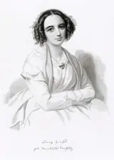
HenselFanny Hensel1805–18472 sourced connections →Zelter teaches Fanny Mendelssohn counterpoint and Bach1807Aloysius BertrandAloysius Bertrand1807–18411 sourced connection →Three prose poems become piano scenes1807Henry Wadsworth LongfellowHenry Wadsworth Longfellow1807–18821 sourced connection →Dvořák calls the Largo a Hiawatha study1809Edgar Allan PoeEdgar Allan Poe1809–18492 sourced connections →Poe’s bells arrive through Balmont1809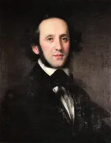
MendelssohnFelix Mendelssohn1809–18475 sourced connections →Mendelssohn reads Shakespeare in German and writes an overture1810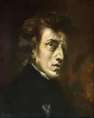
ChopinFrédéric Chopin1810–18499 sourced connections →Chopin hears village musicians at Szafarnia, 18251810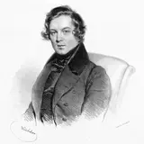
R. SchumannRobert Schumann1810–18568 sourced connections →Schumann’s Papillons retell the masked ball in Flegeljahre1811 LisztFranz Liszt1811–188611 sourced connections →Liszt hears Paganini at the Opéra, April 18321813Alexander DargomyzhskyAlexander Dargomyzhsky1813–18691 sourced connection →Mussorgsky sets Gogol’s Marriage as Dargomyzhsky set Pushkin1813Georg BüchnerGeorg Büchner1813–18371 sourced connection →Berg sees Woyzeck on stage and begins an opera1813
LisztFranz Liszt1811–188611 sourced connections →Liszt hears Paganini at the Opéra, April 18321813Alexander DargomyzhskyAlexander Dargomyzhsky1813–18691 sourced connection →Mussorgsky sets Gogol’s Marriage as Dargomyzhsky set Pushkin1813Georg BüchnerGeorg Büchner1813–18371 sourced connection →Berg sees Woyzeck on stage and begins an opera1813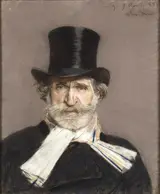
VerdiGiuseppe Verdi1813–19014 sourced connections →Verdi sets Macbeth, his first Shakespeare opera1813 WagnerRichard Wagner1813–188314 sourced connections →Wagner attends Berlioz’s Roméo et Juliette in Paris1819C. SchumannClara Schumann1819–18963 sourced connections →Mendelssohn conducts Clara Wieck’s piano concerto, 18351821Fyodor DostoevskyFyodor Dostoevsky1821–18812 sourced connections →Reading the symphonies beside The Brothers Karamazov1821Mary Baker EddyMary Baker Eddy1821–19101 sourced connection →Christian Science enters the composer’s own account1824Alexandre Dumas filsAlexandre Dumas fils1824–18951 sourced connection →Verdi sees La Dame aux camélias and writes Traviata1824
WagnerRichard Wagner1813–188314 sourced connections →Wagner attends Berlioz’s Roméo et Juliette in Paris1819C. SchumannClara Schumann1819–18963 sourced connections →Mendelssohn conducts Clara Wieck’s piano concerto, 18351821Fyodor DostoevskyFyodor Dostoevsky1821–18812 sourced connections →Reading the symphonies beside The Brothers Karamazov1821Mary Baker EddyMary Baker Eddy1821–19101 sourced connection →Christian Science enters the composer’s own account1824Alexandre Dumas filsAlexandre Dumas fils1824–18951 sourced connection →Verdi sees La Dame aux camélias and writes Traviata1824 BrucknerAnton Bruckner1824–18962 sourced connections →Bruckner dedicates his Third Symphony to Wagner1825Eduard HanslickEduard Hanslick1825–19041 sourced connection →Wagner’s Beckmesser began as “Veit Hanslich”1827Arnold BöcklinArnold Böcklin1827–19011 sourced connection →Böcklin’s island becomes a symphonic poem1828Leo TolstoyLeo Tolstoy1828–19102 sourced connections →Tolstoy’s Kreutzer Sonata becomes a string quartet1832Nikolai ZverevNikolai Zverev1832–18931 sourced connection →Zverev’s household was also a conservatory1833
BrucknerAnton Bruckner1824–18962 sourced connections →Bruckner dedicates his Third Symphony to Wagner1825Eduard HanslickEduard Hanslick1825–19041 sourced connection →Wagner’s Beckmesser began as “Veit Hanslich”1827Arnold BöcklinArnold Böcklin1827–19011 sourced connection →Böcklin’s island becomes a symphonic poem1828Leo TolstoyLeo Tolstoy1828–19102 sourced connections →Tolstoy’s Kreutzer Sonata becomes a string quartet1832Nikolai ZverevNikolai Zverev1832–18931 sourced connection →Zverev’s household was also a conservatory1833 BrahmsJohannes Brahms1833–18978 sourced connections →Did Brahms fall asleep during Liszt’s B minor Sonata?1833Larin ParaskeLarin Paraske1833–19041 sourced connection →A rune singer teaches Sibelius how Finnish sings1834Viktor HartmannViktor Hartmann1834–18731 sourced connection →Mussorgsky walks through Hartmann’s memorial exhibition1835Camille Saint-SaënsCamille Saint-Saëns1835–19212 sourced connections →Saint-Saëns makes the death chant dance1837Mily BalakirevMily Balakirev1837–19103 sourced connections →Balakirev guides and premieres Rimsky-Korsakov’s First Symphony1839
BrahmsJohannes Brahms1833–18978 sourced connections →Did Brahms fall asleep during Liszt’s B minor Sonata?1833Larin ParaskeLarin Paraske1833–19041 sourced connection →A rune singer teaches Sibelius how Finnish sings1834Viktor HartmannViktor Hartmann1834–18731 sourced connection →Mussorgsky walks through Hartmann’s memorial exhibition1835Camille Saint-SaënsCamille Saint-Saëns1835–19212 sourced connections →Saint-Saëns makes the death chant dance1837Mily BalakirevMily Balakirev1837–19103 sourced connections →Balakirev guides and premieres Rimsky-Korsakov’s First Symphony1839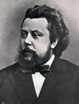
MussorgskyModest Mussorgsky1839–18815 sourced connections →Mussorgsky sets Gogol’s Marriage as Dargomyzhsky set Pushkin1840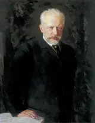
TchaikovskyPyotr Ilyich Tchaikovsky1840–18937 sourced connections →Tchaikovsky attends all six Wagner concerts in St Petersburg1841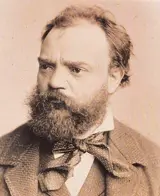
DvořákAntonín Dvořák1841–19043 sourced connections →Brahms recommends Dvořák to Simrock; Slavonic Dances follow1841Emmanuel ChabrierEmmanuel Chabrier1841–18941 sourced connection →Chabrier behind the grotesque serenade1842Stéphane MallarméStéphane Mallarmé1842–18982 sourced connections →Mallarmé’s faun finds its music1843Edvard GriegEdvard Grieg1843–19071 sourced connection →Grieg provides a concerto starting point1844Friedrich NietzscheFriedrich Nietzsche1844–19002 sourced connections →Zarathustra sings at midnight1844 Rimsky-KorsakovNikolai Rimsky-Korsakov1844–19088 sourced connections →Rimsky-Korsakov learns orchestration from Berlioz’s Treatise1845
Rimsky-KorsakovNikolai Rimsky-Korsakov1844–19088 sourced connections →Rimsky-Korsakov learns orchestration from Berlioz’s Treatise1845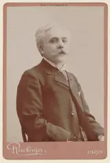
FauréGabriel Fauré1845–19244 sourced connections →Saint-Saëns brings Schumann, Liszt and Wagner to Fauré’s school1850American hymn tunes and town bandsAmerican hymn tunes and town bands19th-century tradition1 sourced connection →Hymn tunes and town bands become Ives’s material1854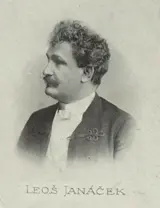
JanáčekLeoš Janáček1854–19281 sourced connection →Tolstoy’s Kreutzer Sonata becomes a string quartet1855Anatoly LyadovAnatoly Lyadov1855–19141 sourced connection →Lyadov’s rules meet an impatient modernist1856André GédalgeAndré Gédalge1856–19261 sourced connection →Gédalge teaches the contrapuntal craft1856Sergei TaneyevSergei Taneyev1856–19151 sourced connection →Tchaikovsky recommends advanced counterpoint1857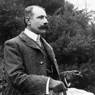
ElgarEdward Elgar1857–19342 sourced connections →Nimrod hints at Beethoven’s Pathétique slow movement1858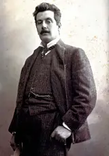
PucciniGiacomo Puccini1858–19242 sourced connections →Puccini walks to Pisa to hear Aida1858Hans RottHans Rott1858–18841 sourced connection →Rott’s scherzo: resemblance is not proof1858Joséphin PéladanJoséphin Péladan1858–19181 sourced connection →Péladan makes Satie composer to the Rose+Croix1860Bohemian military-band traditionBohemian military-band traditionMahler’s childhood, 1860s–1870s1 sourced connection →The garrison town enters the orchestra1860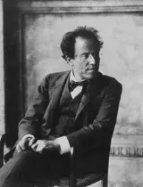
MahlerGustav Mahler1860–191122 sourced connections →The garrison town enters the orchestra1861Anton ArenskyAnton Arensky1861–19061 sourced connection →Arensky teaches the composer’s working tools1862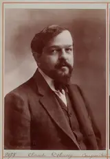
DebussyClaude Debussy1862–19187 sourced connections →A Javanese gamelan in Paris reshapes Debussy’s ear1863Alexander SilotiAlexander Siloti1863–19451 sourced connection →A cousin takes over the piano lessons1864 StraussRichard Strauss1864–19492 sourced connections →Strauss answers Nietzsche in a tone poem1865
StraussRichard Strauss1864–19492 sourced connections →Strauss answers Nietzsche in a tone poem1865 SibeliusJean Sibelius1865–19571 sourced connection →A rune singer teaches Sibelius how Finnish sings1866
SibeliusJean Sibelius1865–19571 sourced connection →A rune singer teaches Sibelius how Finnish sings1866 SatieErik Satie1866–19254 sourced connections →Péladan makes Satie composer to the Rose+Croix1866Harry T. BurleighHarry T. Burleigh1866–19491 sourced connection →Burleigh sings spirituals to Dvořák in New York1866Wassily KandinskyWassily Kandinsky1866–19442 sourced connections →A Schoenberg concert becomes Impression III1868Francis JammesFrancis Jammes1868–19381 sourced connection →Francis Jammes’s poems become Lili Boulanger’s song cycle1868Stefan GeorgeStefan George1868–19331 sourced connection →George’s poems bring a voice into the quartet1872ScriabinAlexander Scriabin1872–19151 sourced connection →Scriabin’s 24 Preludes follow Chopin’s plan1872Ralph Vaughan WilliamsRalph Vaughan Williams1872–19581 sourced connection →Vaughan Williams comes to Paris for clarity1872Sergei DiaghilevSergei Diaghilev1872–19291 sourced connection →Diaghilev rejects one ballet and orders another1873Max RegerMax Reger1873–19161 sourced connection →Reger builds an organ monument on BACH1873Nikolai TcherepninNikolai Tcherepnin1873–19451 sourced connection →Conducting lessons plant the Classical Symphony1873
SatieErik Satie1866–19254 sourced connections →Péladan makes Satie composer to the Rose+Croix1866Harry T. BurleighHarry T. Burleigh1866–19491 sourced connection →Burleigh sings spirituals to Dvořák in New York1866Wassily KandinskyWassily Kandinsky1866–19442 sourced connections →A Schoenberg concert becomes Impression III1868Francis JammesFrancis Jammes1868–19381 sourced connection →Francis Jammes’s poems become Lili Boulanger’s song cycle1868Stefan GeorgeStefan George1868–19331 sourced connection →George’s poems bring a voice into the quartet1872ScriabinAlexander Scriabin1872–19151 sourced connection →Scriabin’s 24 Preludes follow Chopin’s plan1872Ralph Vaughan WilliamsRalph Vaughan Williams1872–19581 sourced connection →Vaughan Williams comes to Paris for clarity1872Sergei DiaghilevSergei Diaghilev1872–19291 sourced connection →Diaghilev rejects one ballet and orders another1873Max RegerMax Reger1873–19161 sourced connection →Reger builds an organ monument on BACH1873Nikolai TcherepninNikolai Tcherepnin1873–19451 sourced connection →Conducting lessons plant the Classical Symphony1873 RachmaninoffSergei Rachmaninoff1873–194319 sourced connections →Zverev’s household was also a conservatory1874
RachmaninoffSergei Rachmaninoff1873–194319 sourced connections →Zverev’s household was also a conservatory1874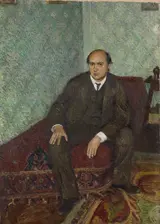
SchoenbergArnold Schoenberg1874–19517 sourced connections →George’s poems bring a voice into the quartet1874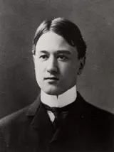
IvesCharles Ives1874–19542 sourced connections →Hymn tunes and town bands become Ives’s material1875 RavelMaurice Ravel1875–193718 sourced connections →Russian orchestral colour reaches Paris1875Reinhold GlièreReinhold Glière1875–19561 sourced connection →Glière visits the child composer at home1876Hans BethgeHans Bethge1876–19461 sourced connection →China reaches Mahler through several translators1879Wanda LandowskaWanda Landowska1879–19591 sourced connection →Poulenc writes a harpsichord concerto for Landowska1881
RavelMaurice Ravel1875–193718 sourced connections →Russian orchestral colour reaches Paris1875Reinhold GlièreReinhold Glière1875–19561 sourced connection →Glière visits the child composer at home1876Hans BethgeHans Bethge1876–19461 sourced connection →China reaches Mahler through several translators1879Wanda LandowskaWanda Landowska1879–19591 sourced connection →Poulenc writes a harpsichord concerto for Landowska1881 BartókBéla Bartók1881–19452 sourced connections →Bartók records peasant songs on the phonograph1882StravinskyIgor Stravinsky1882–19715 sourced connections →Stravinsky studies with Rimsky-Korsakov until 19081883
BartókBéla Bartók1881–19452 sourced connections →Bartók records peasant songs on the phonograph1882StravinskyIgor Stravinsky1882–19715 sourced connections →Stravinsky studies with Rimsky-Korsakov until 19081883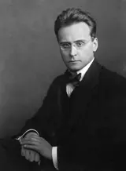
WebernAnton Webern1883–19453 sourced connections →Webern edits Isaac and learns the interplay of parts1883Franz KafkaFranz Kafka1883–19241 sourced connection →Kurtág sets Kafka’s fragments for soprano and violin1885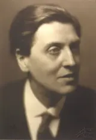
BergAlban Berg1885–19355 sourced connections →Berg begins seven years of lessons with Schoenberg1888Frère Jacques / Bruder MartinFrère Jacques / Bruder MartinTraditional round; Mahler quotation, 18882 sourced connections →Bruder Martin walks into a funeral1891ProkofievSergei Prokofiev1891–195313 sourced connections →Glière visits the child composer at home1893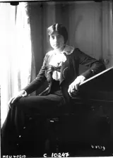
BoulangerLili Boulanger1893–19181 sourced connection →Francis Jammes’s poems become Lili Boulanger’s song cycle1898George GershwinGeorge Gershwin1898–19371 sourced connection →Gershwin plays at Ravel’s birthday party1898Sergei EisensteinSergei Eisenstein1898–19481 sourced connection →Film follows music; music follows film1899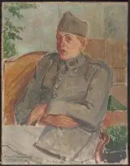
PoulencFrancis Poulenc1899–19631 sourced connection →Poulenc writes a harpsichord concerto for Landowska1903Mark RothkoMark Rothko1903–19701 sourced connection →Rothko’s paintings inspire Feldman’s Rothko Chapel1906ShostakovichDmitri Shostakovich1906–19754 sourced connections →Sollertinsky teaches Shostakovich to love Mahler1907W. H. AudenW. H. Auden1907–19731 sourced connection →Auden writes Britten’s first music drama1908MessiaenOlivier Messiaen1908–19923 sourced connections →A gift of Pelléas becomes “a thunderbolt” for Messiaen1908Spanish song traditionSpanish song traditionTraditional songs; linked Ravel work, 19081 sourced connection →Spanish songs remembered from his mother1912Conlon NancarrowConlon Nancarrow1912–19971 sourced connection →Ligeti discovers Nancarrow’s player-piano Studies1912John CageJohn Cage1912–19923 sourced connections →Cage opens publishers’ doors to Boulez1913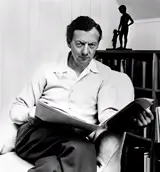
BrittenBenjamin Britten1913–19766 sourced connections →Teenage Britten hears Mahler’s Fourth1914Basque dance traditionBasque dance traditionTraditional dance; Trio model, 19141 sourced connection →The Trio sways in three-two-three1915Znamenny chantZnamenny chantOrthodox chant; Vigil setting, 19152 sourced connections →Old chant becomes a choral orchestra1918Leonard BernsteinLeonard Bernstein1918–19901 sourced connection →Bernstein changes joy to freedom in Berlin1923LigetiGyörgy Ligeti1923–20061 sourced connection →Ligeti discovers Nancarrow’s player-piano Studies1925BoulezPierre Boulez1925–20164 sourced connections →Boulez joins Messiaen’s advanced harmony class1926KurtágGyörgy Kurtág1926–1 sourced connection →Kurtág sets Kafka’s fragments for soprano and violin1926FeldmanMorton Feldman1926–19872 sourced connections →Feldman meets Cage after Webern’s Symphony1927Jazz and bluesJazz and bluesLinked Ravel Blues movement, 19271 sourced connection →Ravel’s Blues predates the American tour1929George CrumbGeorge Crumb1929–20221 sourced connection →The chant haunts an amplified string quartet1931GubaidulinaSofia Gubaidulina1931–20252 sourced connections →Shostakovich tells Gubaidulina to continue her “mistaken” way1935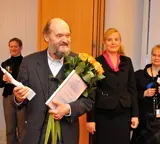
PärtArvo Pärt1935–3 sourced connections →Pärt places Bach beside twelve-tone dissonance1936ReichSteve Reich1936–2 sourced connections →Reich studies Ewe drumming in Ghana1947AdamsJohn Adams1947–1 sourced connection →Cage’s Silence loosens Adams’s modernist training1952SaariahoKaija Saariaho1952–20231 sourced connection →A troubadour’s love from afar becomes Saariaho’s opera1960The BeatlesThe Beatles1960–19701 sourced connection →A children’s round enters Paperback Writer1971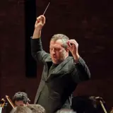
AdèsThomas Adès1971–1 sourced connection →Adès re-scores three Couperin harpsichord pieces1972The European anthemThe European anthemAdopted 1972; European Community adoption 19851 sourced connection →The Ode becomes an anthem without wordsTouch a portrait; follow its gold threads. Drag to wander · scroll to look closer
No connections match these filters.
Portraits mark lives; threads record particular encounters, not a claim that one composer explains another. Birth years run from left to right: years before 1650 are compressed, and crowded generations have more room. Cards give the date of the connection.
Further reading
- Joseph N. Straus, Remaking the Past: Musical Modernism and the Influence of the Tonal Tradition (Harvard University Press, 1990).study
Examines musical modernism in relation to inherited tonal traditions; a theoretical counterpart to the specific borrowing practices studied by Burkholder.
- Kevin Korsyn, ‘Towards a New Poetics of Musical Influence’, Music Analysis 10, nos. 1–2 (1991).study
A theoretical treatment of musical influence. Use its interpretative arguments alongside documentary evidence, not as a substitute for it.
- J. Peter Burkholder, ‘Borrowing’, Grove Music Online (Oxford University Press, 2001).reference
A reference article specifically on musical borrowing; the link supplies the publisher-deposited bibliographic record.
- J. Peter Burkholder, All Made of Tunes: Charles Ives and the Uses of Musical Borrowing (Yale University Press, 2004 paperback).study
Treats borrowing as a compositional practice, not merely a list of recognisable quotations.
- Charles Rosen, The Classical Style: Haydn, Mozart, Beethoven, expanded edition (W. W. Norton, 1998 paperback).study
Explains musical conventions through Haydn, Mozart and Beethoven; the expanded edition includes a chapter on late Beethoven.
Interactive evidence cards, filters and playback require JavaScript. The portraits remain readable.